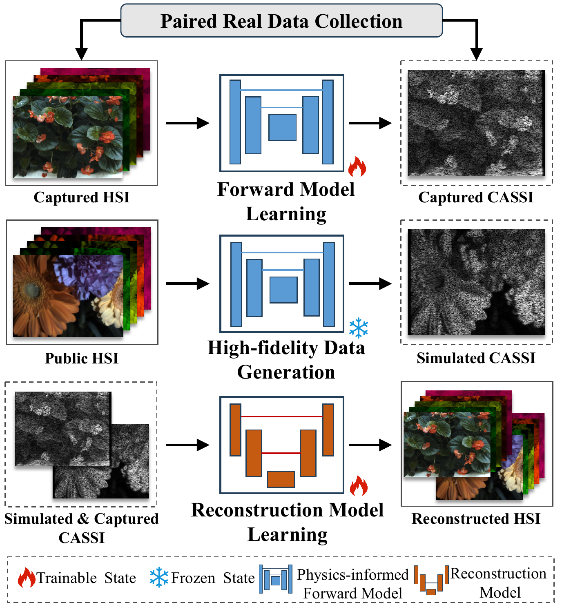
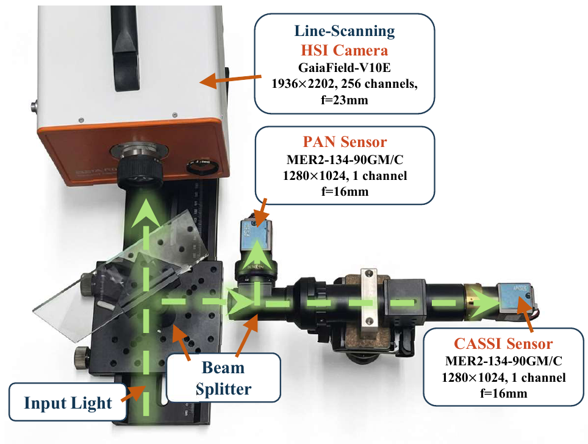
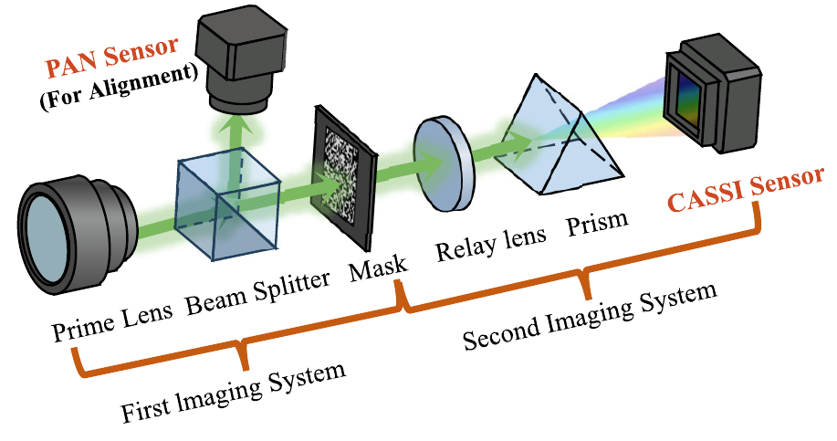
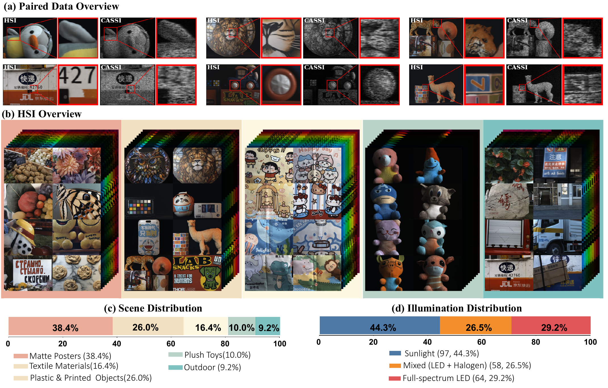

The Simulation-to-Reality Gap in CASSI
The Problem
Deep learning-based CASSI reconstruction methods achieve remarkable results on simulated datasets, but their performance often degrades significantly when deployed on real CASSI systems.
Root Cause
This simulation-to-reality gap primarily arises from forward model mismatch. Existing methods rely on idealized forward models to synthesize training data, which fail to capture the complex imaging process of real CASSI systems. As a result, the learned reconstruction mapping becomes misaligned with the actual image formation process.
Our Solution
We propose a paradigm shift from explicit analytical modeling to a data-driven forward model. By learning a physics-informed proxy network directly from real HSI–CASSI pairs, our approach models the real imaging process and enables the generation of more realistic training data for reconstruction networks.
Key Concept

Key Contributions
rSCI Dataset
The first real-world paired dataset for spectral compressive imaging. It contains 219 HSI–CASSI pairs captured under diverse indoor and outdoor scenes with varying illumination conditions.
LPFM Model
A learnable physics-informed forward model trained on real HSI–CASSI pairs. LPFM integrates CASSI structural priors to capture complex real-world degradations while preserving physical consistency.
Real-World Benchmark
The first real-world benchmark for CASSI reconstruction. Experiments show that incorporating LPFM-generated synthetic data consistently improves reconstruction performance across multiple representative methods.
Paired Dataset Acquisition System
Our dual-branch acquisition platform features:
- Compressive branch: CASSI sensor + PAN sensor (Just for alignment)
- HSI branch: GaiaField-V10E line-scanning HSI camera


rSCI: Real-World Paired Dataset for CASSI
The dataset covers diverse illumination conditions (sunlight, LED, halogen) and scene categories (posters, textiles, toys, outdoor scenes).

LPFM: Physics-Informed Forward Model
LPFM combines data-driven learning with physical structure priors to model the real CASSI imaging process.

LPFM: Physics-Informed Forward Model
LPFM combines data-driven learning with physical structure priors to model the real CASSI imaging process.

Real-World Reconstruction Demo
Visualization of CASSI reconstruction results on real-world video.
Person riding a bicycle (outdoor)
Scene: Moving Cars (outdoor) | Training Strategy: R + LPFM
Toy car (indoor)
Scene: Toy car (indoor) | Training Strategy: R + LPFM
Person riding a bicycle (outdoor)
Scene: person riding a bicycle (outdoor) | Training Strategy: R + LPFM
Roly-poly toy (indoor)
Scene: Roly-poly toy (indoor) | Training Strategy: R + LPFM
Affiliations
Beijing Institute of Technology - Beijing, China
Beijing Normal University - Beijing, China
Korea Advanced Institute of Science and Technology (KAIST) - Daejeon, South Korea